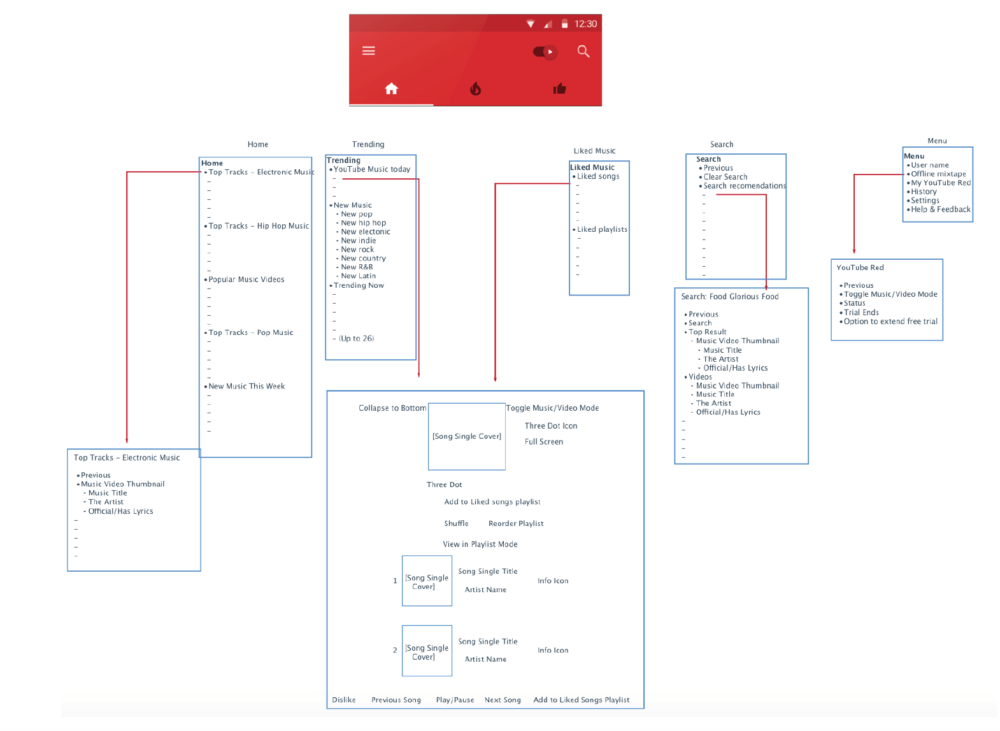
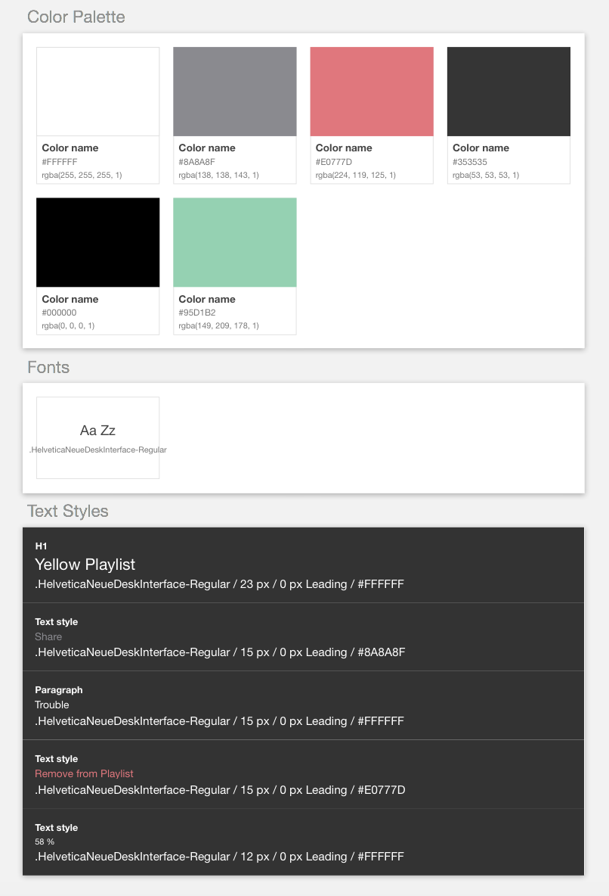
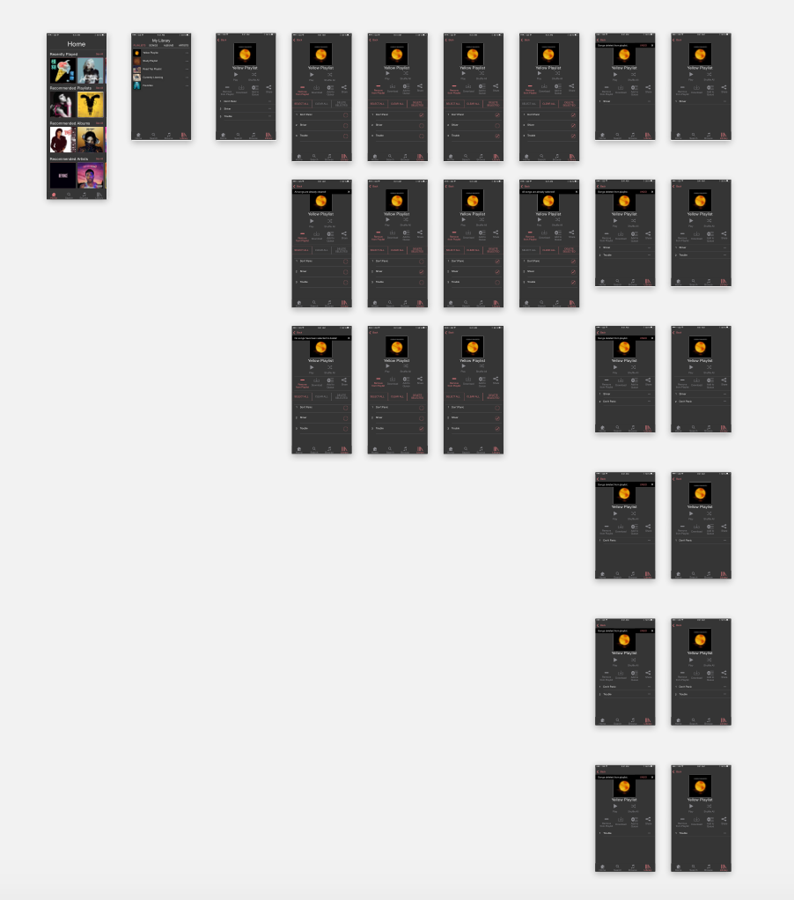
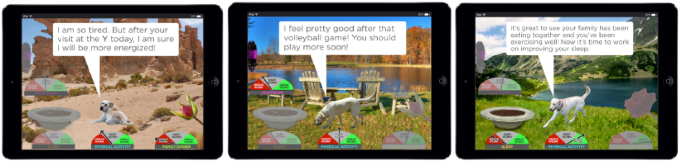
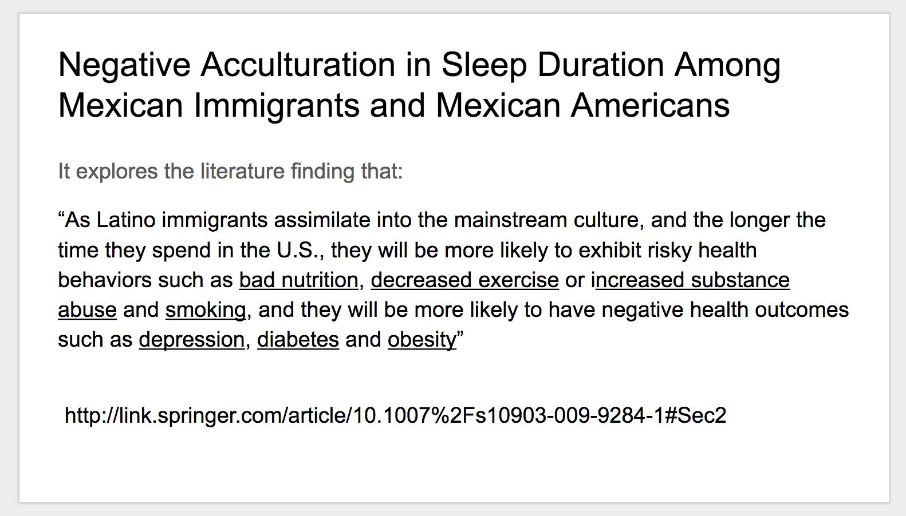
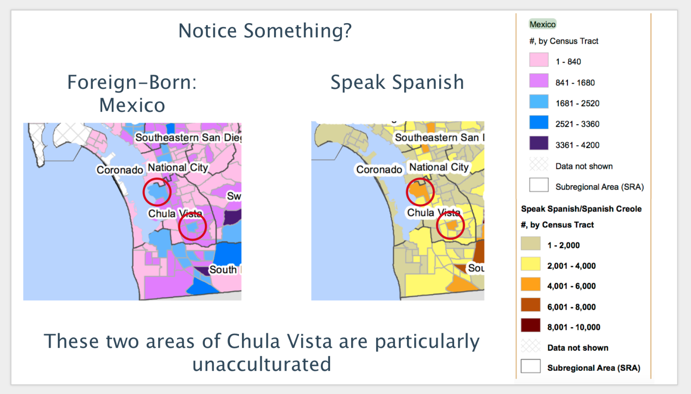
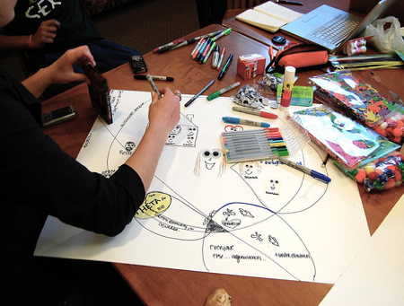

I am a junior at UC San Diego studying Cognitive Science with a specialization in Design & Interaction. With this background I continue to immerse myself with the intricacies of user research that contextualizes impactful design, as well as product design that positively makes people tick.
Education
UC San Diego
Major: B. S. Cognitive Science (2018)
Specializing in Design & Interaction
Skills
Hi-fidelity Mockups (SketchApp & Craft),
Prototyping (Invision, Principle),
User Research (Interviews, Experiments, Surveying, Storymapping, Personas, Usability Testing),
The final project for the COGS 187A class was undergone by Emily Shung, Fiona Chang, and myself. The project called for making interactive wireframes of a music streaming app showcasing the user scenarios of creating and managing a playlist. This deliverable was to have a foundation laid by user interviews, scenario competitive analysis, sitemap competitive analysis, and the wireframes to compile for the interactive section.
My role in the project was one that contributed my part every step of the way which includes my contribution to the interviews, capturing user flows to analyze, composing one of the sitemaps of a competitor music app, and of course designing the wireframes themselves of which I did the bulk of the work.
I also served as our resident facilitator and troubleshooter in our use of SketchApp to compose wireframes and Invision to bring our interactions to life since I was the only one remotely familiar with the design tools.
To properly understand the landscape we were to design for and into, the assignment called for conducting user interviews. Taking heed that the minimum 9 user interviews was a good number from the assignment, my team split up the work. I interviewed 4 of the 9 since I had access to more applicable participants sooner.
The interviews themselves were preceded by a compilation of questions we sought to be answered. This was followed by the interviewing before we finally analyzed our findings. Through this analysis we were able to extrapolate user scenarios to further focus our discovery of the environment we’re designing in.
Still, finding the right tools to capture the interviews proved difficult. I managed to overcome this by having the users I interviewed download the app ‘Mobizen’ which makes a screen recording of their interactions with their smartphone. It also has the added bonus of recording our voices and therefore our interview. Though it has it’s limitations in this area, such as also recording the song which may sound-out our speech, having a notebook at hand during the interview allowed me to record my insights of the session.
We went about capturing screen sequences that we thought were good design along with sequences we thought were not so good design. This was called for by the assignment to better understand the best practices to adopt and shortcomings to avoid of popular music apps.
I made 4 of the 10 good & bad examples.
What made this difficult for the team was finding a way to capture the screens as well as figuring out how to annotate the flows themselves. We just took screens from our mobile phones where upon our interviewees conducted a scenario. Upon quickly realizing how applicable SketchApp is to this (not being limited to just composing wireframes), I taught the team the basics of using the tool and which capabilities were particularly useful for our task at hand. This way I wasn’t the only to work on this and a bottle neck for the project’s progress.

We then conducted a competitive analysis of the navigations and their underlying structures of popular music apps. This was also for guiding our design decisions later.
I was tasked with composing and presenting YouTube Red’s navigation elements and sitemap.
What proved most challenging about this part of the assignment was accurately portraying the site’s capabilities for a user in a consistent, presentable way. This was overcome through sought-after, expert feedback which comprised of the deliverable being acceptable once it is comprehensible. Meticulous uniform design is not necessary to achieve this goal.

We had two scenarios to design: creating and managing a playlist. To accomplish this, I implemented the use of the Craft plugins for SketchApp to streamline the process. An example of this was the use of Styles to create a style guide for the team to agree upon.
As I was setting these capabilities up, my team members finalized our sketches to design. Seeing that they struggled with using the tool’s full capabilties, I put it upon myself to actualize most of the sketches as they provided feedback, formulated logic flows, and finalized color schemes to follow.
That is not to say they made no wireframes. They made pages integral to the scenarios we wanted to convey such as the home screen, library screen, and creating a new playlist screens.

I made the variability states of the design. This included dozens of screens showing functionalities including playing music, adding music to a playlist, and deleting music from a playlist.
I also made the icons and navbar the design employs on every screen. This proved difficult at first but the process was streamlined with the use of Craft plugin’s Styles.
Please follow this flow when going through the design: (1)Click search icon in navbar (2) Click Search bar (3)Click keyboard (4)Scroll down, under "albums" click "Yellow Coldplay” (5)Click "Add to Playlist" (6)Select first song "Don’t Panic" (7)Select second song "Shiver" (8)Select sixth song "Trouble" (9)Click "Add Selected” (10)Select "Create New Playlist” (11)Click keyboard (12)Click "Create" (13)Click Home in navbar (14)Click Library in navbar (15)Click Yellow Playlist (16)Click "Remove from Playlist” (17)Select first song "Don’t Panic" (18)Select third song "Trouble" (19)Click "Delete Selected”
Making the prototype itself was challenging in two ways: understanding the capabilities/limitations of the tool, and coordinating our efforts to quicken our pace.
The first challenge was addressed by trial and error. As a team we discovered affordances that allowed us to work faster than we meticulously have before. We were able to coordinate such use of the affordances through text messaging and when that wasn’t enough, quick phone calls. It was the phone calls that allowed us to play tech support and walk one another through a faster or new way to go about things.
It was from this final group project for the class that I solidified the value of going beyond my “fair share” and looking out for what’s good for the team as a whole. I grown appreciative of having a team to design alongside you as it made the design much better than if it were made in a silo.
Code4Sac's Student Success Initiative
Mobile Design
Instead of recreating it all in this modal, Here's the link to the case study done in another, fuller page.
UCSD's SHINE Research
User Research

SHINE is a research project lead by Jina Huh under UCSD’s Bioinformatics department. The research aims to better the lives of the hispanic populace in Chula Vista, CA by providing appropriate feedback to their sleep, screen viewing, and family eating habits. This feedback will come from audio sensory technology that which will provide input for our proposed, “Doggy” interface.
My role in the project involves formulating insights from the hispanic populace in Chula Vista through academic research reviews, demographic data procurement and analysis, and focus group interviews.

The research reviews involved exploring the dynamic these families may face and how this may affect their receptiveness to common behavior change research findings.

The demographic data procurement then was used to evaluate their profile based on where they lived. Through this I helped us link the research review findings to their probable way of life. This includes their increased receptivity to feedback if they were more acclimated to American culture being linked to the data showing that the Chula Vista populace is still mostly in fact foreign-born.

The highlight of my role involved my assistance in the facilitation of a focus group user research interview for Chula Vista residents that fit the profile we wished to serve. This included asking them open-ended questions about their family dynamics involving sleep, eating, and screen viewing. All the while, I was jotting down translated notes of their Spanish responses along with verbally translating them to my research lead, Jina Huh who did not understand the language to a fluent level.
Afterward, we had the interviewees to sketch their own solutions for their problems they’ve expressed in a participatory design session.
Though balancing the attention to the interviewees, my notebook, and Jina Huh seemed challenging at first (especially since I was not told that I would be juggling all of these duties), I simply remembered my training and education to keep my performance professional and the focus group session insightful.
It was from this first quarter experience that I learned the value of keeping my assumptions in check at a scientific level. I have solidified my appreciation of relentlessly but professionally acquiring the insights that really matter for any effort.